assets/logos/scrapeman-mark.svg

Aynı SVG path, farklı display boyutları. 16px'te silüet dikenli bir slash'a düşer ama tanınabilir kalır; 64 üstü her yerde tek-gesture okuması sağlam.
apps/desktop/src/renderer/src/App.tsx — inline SVG,
h-6 w-6 text-accent. Tek-harf placeholder yerine
geçti.
apps/desktop/build-resources/icon.icns — 7 boyutlu
iconset + iconutil -c icns. electron-builder
auto-pickup.
apps/desktop/build-resources/icon.png — 1024×1024.
Gerçek Windows .ico M10 signing milestone'una parked.